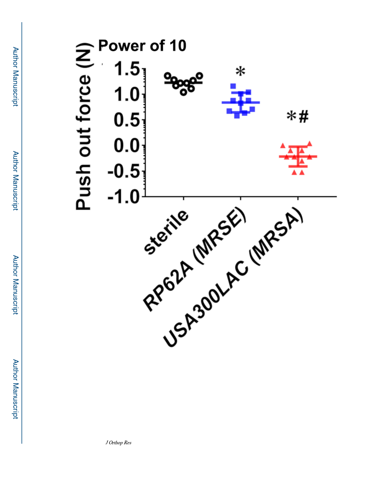

Tomizawa et al.
Page 19
Figure 7. Limited osseous integration of transtibial implants into S. epidermidis infected tibiae.
Mice (n=10) were challenged with a transtibial implant containing no bacteria (Sterile),
1.6×105 CFU of RP62A, or 2.1×105 CFU of USA300, euthanized on day 14, and their tibiae
were harvested for biomechanical put out testing. The data for each tibia is presented with
the mean for the group ± SD (*p < 0.001 vs. Sterile; #p < 0.001 vs. RP62A). Of note is that
there were significant differences between Sterile and RP62A, and RP62A and USA300.
J Orthop Res. Author manuscript; available in PMC 2021 April 01.